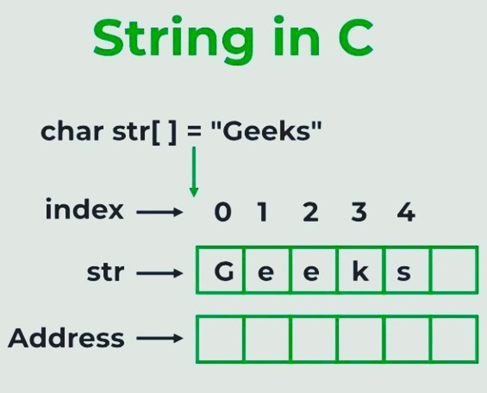
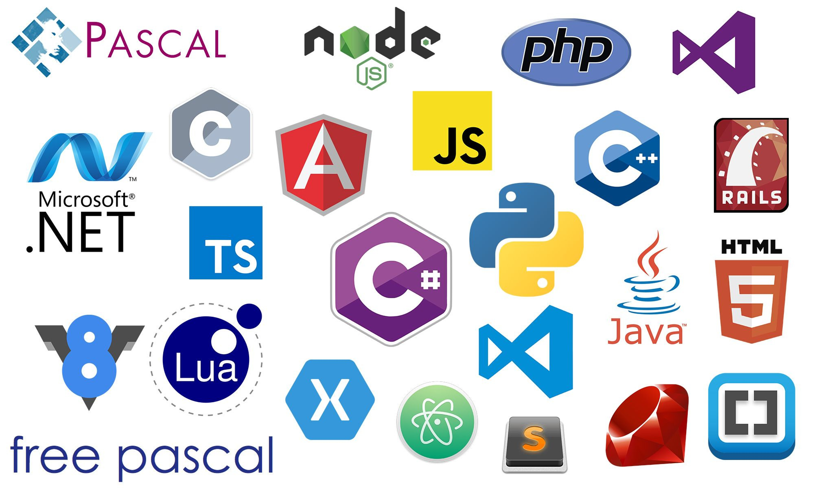

Algoritmos de manejo de cadenas de texto.
¡Únete a nosotros mientras exploramos el fascinante mundo de las cadenas de texto y los algoritmos que las manipulan! Ya seas un principiante curioso o un desarrollador experimentado en busca de técnicas avanzadas, ¡aquí encontrarás recursos útiles y educativos para mejorar tus habilidades en el manejo de cadenas de texto en programación!

¿Que son las cadenas como estructuras de datos en computación?
Las cadenas o strings son un tipo de estructuras de datos que representan texto. Esto quiere decir que pueden ser una serie o secuencia de caracteres (letras, números y símbolos). Como este tipo de datos representa el texto, su utilización es fundamental para manipular data textual en múltiples...
Leer más →

¿Cuáles son las principales operaciones de manejo de cadenas?
Se pueden realizar una serie de operaciones con las cadenas, que pueden variar desde la concatenación (unir varias cadenas), extracción de partes de una cadena, calcular su longitud, entre otras. Este tipo de operaciones permiten...
Leer más →

Descubre los principales algoritmos empleados para manejo de cadenas en los lenguajes de programación.
El manejo de cadenas es una tarea fundamental en la programación, y cada lenguaje de programación tiene sus propias herramientas y algoritmos para manipularlas de manera eficiente. A continuación, se describen algunos de los...
Leer más →
Algunos programas que implementan manejo de cadenas.
El manejo eficiente de cadenas es una habilidad fundamental en la programación, ya que las cadenas de texto son una parte omnipresente en el desarrollo de software. En este artículo, exploraremos cómo implementar el manejo de cadenas...
Leer más →
La importancia del manejo eficiente de cadenas en la seguridad informática.
El manejo de cadenas en el contexto de la seguridad informática es crucial, ya que las cadenas mal gestionadas pueden dar lugar a vulnerabilidades que podrían ser explotadas por atacantes para...
Leer más →